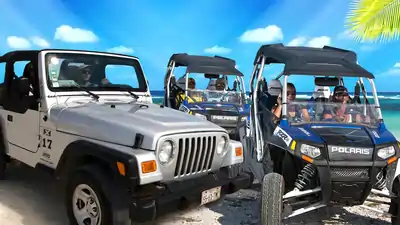

About Us

Welcome to Scoots, your premier motor scooter rental company on the stunning island of Cozumel in the
western Caribbean Sea. As a locally-owned and operated business, we are dedicated to providing top-notch
rental services to a diverse range of customers, including locals, walk-in tourists, motor scooter
enthusiasts, and cruise-based touring groups and partnerships.
With two convenient physical rental locations, we make it easy for you to explore Cozumel's beauty on
two wheels or four. Our main location near the Playa del Carmen-Cozumel Ferry dock in el Centro de
Cozumel caters to all travelers, while our second location near the Terminal Puerta Maya is ideal for
cruise line passengers and patrons.

At Scoots, we pride ourselves on offering friendly and hassle-free rental experiences for motor
scooters, jeeps, and side-by-side ATVs. Whether you're looking to zip around the island solo or embark
on an adventure with friends and family, we have the perfect rental options for you.
Our website serves as a gateway to our services, providing essential information about our offerings,
rental process, and requirements. We invite you to explore Cozumel's hidden gems and escape the touristy
western part of the island by discovering the vast coasts and inlets on the southern and eastern shores.
Join us at Scoots for an unforgettable island experience filled with fun, freedom, and exploration.
Let's make your Cozumel journey an adventure to remember!
Sneak Peak at Our Rentals